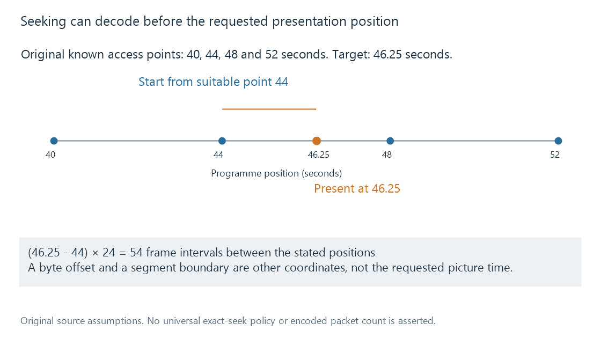

Seeking during streaming
Seeking resolves a requested media-time destination through available ranges, resource access and decoding dependencies before presentation resumes.
Seeking asks a playback path to resume at a particular media-time destination. That can require selecting another resource interval, fetching data, initialising a decoder and producing new output before the requested picture is available.
The requested time and the point where reading or decoding begins need not be identical.
The destination can depend on earlier data
Assume an original source with known suitable random-access points at seconds 40, 44, 48 and 52. A request targets second 46.25.
A path can begin decoding at 44 and process forward to the destination. For a constant 24-fps sequence, the positions are separated by:
(46.25 - 44) × 24 = 54 frame intervals

This counts intervals between the stated positions, not a universal packet or decode-frame count. Real codec dependencies, timestamp cadence and access-point types supply the actual work.
Some paths present near an available access point; others decode forward and discard preceding output to reach a more precise target. A nearby presentation and an exact-target presentation are different behaviors.
Buffered and seekable are different ranges
A position can be seekable through resource retrieval even when it is not currently buffered at the player. Conversely, received data does not prove that every location is an independently decodable starting point.
A stored on-demand resource can offer destinations across its available timeline. A live stream can expose a moving retained window. A requested old position outside that window needs another archive or cannot be resolved through that current live resource.
The HTML media model distinguishes seekable and buffered ranges. Those concepts help explain why a progress bar's current received interval is not a complete map of every possible destination.
HTTP uses bytes, not media seconds
An original HTTP example requests part of a million-byte resource:
Range: bytes=400000-499999
HTTP/1.1 206 Partial Content
Content-Range: bytes 400000-499999/1000000
Content-Length: 100000
The inclusive byte endpoints yield 499999 - 400000 + 1 = 100000 bytes.
There is no timestamp in those fields. A container index or other media interpretation must relate the requested playback time to useful resource data. Multiplying a timestamp by an average bitrate is not a generally exact seek map for variable-rate, multi-stream media.
The example was not sent to a server. It illustrates the byte contract defined by HTTP range semantics.
Segmentation adds another coordinate
A delivery path can fetch a segment covering the destination interval. The segment's identity and its internal presentation times are different coordinates again.
A segment boundary does not by itself prove independent decoding. The format, initialization data and access-point properties determine whether the chosen data can begin a useful decode sequence there. HLS includes explicit independent-segment semantics rather than making independence a universal consequence of every boundary.
Fetching the right segment can therefore be necessary while still leaving decoder preparation before the target picture.
Conversion can need a new output region
A server may have generated output far ahead of the old playback position while having nothing ready for a new destination elsewhere. The old lead does not describe the newly requested interval.
A conversion path can restart or resume work for that region. Input access, filter/encoder state and output packaging can then contribute to seek delay.
The resulting output may have another clock origin. In an original mapping that starts output at zero for the requested 46.25-second destination:
programme position = output position + 46.25 seconds
Output second 2 corresponds to programme second 48.25. Another path can retain source timestamps instead. Reporting progress needs the relevant association, not an unqualified copy of one output clock.
Other selected streams must align
Audio and subtitles also need the requested programme context. Starting video at the destination while using unrelated old audio or subtitle timing does not produce a correct continuation.
Resource changes add another problem: a saved time from another cut can identify a different scene. Resume positions develop that identity/timeline relationship.
See Also
- Video Keyframes and Random Access
- Packet Timestamps
- Time Bases
- Buffering, ready media and playback reserve
- Transcode temporary files and generated output
- Resume positions and playback timelines